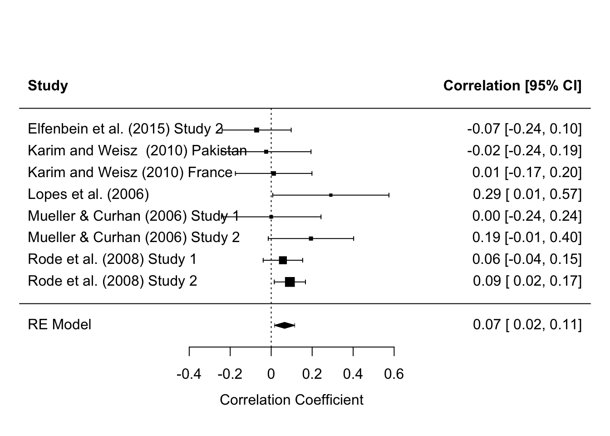

7 Subgroups Analysis
# subgrouping
res.tot <- rma(yi, vi, data=dat, subset=Branch=="Total")
res.per <- rma(yi, vi, data=dat, subset=Branch=="Perception")
res.fac <- rma(yi, vi, data=dat, subset=Branch=="Facilitation")
res.und <- rma(yi, vi, data=dat, subset=Branch=="Understanding")
res.man <- rma(yi, vi, data=dat, subset=Branch=="Management")
# in the subgrouping approach, we let tau^2 to differ across subgroups
sav <- sapply(list(res.tot,res.per,res.fac, res.und, res.man), function(x) c(estimate=x$beta, tau2=x$tau2, k=x$k))
colnames(sav) <- c("res.tot", "res.per", "res.fac", "res.und", "res.man")
round(sav, digits=4)## res.tot res.per res.fac res.und res.man
## estimate 0.0533 0.0655 0.0633 -0.0071 0.2386
## tau2 0.0111 0.0000 0.0031 0.0204 0.0115
## k 11.0000 8.0000 9.0000 9.0000 14.0000res.man##
## Random-Effects Model (k = 14; tau^2 estimator: REML)
##
## tau^2 (estimated amount of total heterogeneity): 0.0115 (SE = 0.0068)
## tau (square root of estimated tau^2 value): 0.1071
## I^2 (total heterogeneity / total variability): 71.30%
## H^2 (total variability / sampling variability): 3.48
##
## Test for Heterogeneity:
## Q(df = 13) = 41.8528, p-val < .0001
##
## Model Results:
##
## estimate se zval pval ci.lb ci.ub
## 0.2386 0.0354 6.7409 <.0001 0.1692 0.3080 ***
##
## ---
## Signif. codes: 0 '***' 0.001 '**' 0.01 '*' 0.05 '.' 0.1 ' ' 1res.per##
## Random-Effects Model (k = 8; tau^2 estimator: REML)
##
## tau^2 (estimated amount of total heterogeneity): 0.0000 (SE = 0.0023)
## tau (square root of estimated tau^2 value): 0.0008
## I^2 (total heterogeneity / total variability): 0.01%
## H^2 (total variability / sampling variability): 1.00
##
## Test for Heterogeneity:
## Q(df = 7) = 8.1280, p-val = 0.3214
##
## Model Results:
##
## estimate se zval pval ci.lb ci.ub
## 0.0655 0.0250 2.6243 0.0087 0.0166 0.1144 **
##
## ---
## Signif. codes: 0 '***' 0.001 '**' 0.01 '*' 0.05 '.' 0.1 ' ' 1forest(res.per, header=TRUE, addpred=TRUE, slab = dat$Author)
rma(yi, vi, data=dat, method= "FE", subset=Branch=="Perception")##
## Fixed-Effects Model (k = 8)
##
## I^2 (total heterogeneity / total variability): 13.88%
## H^2 (total variability / sampling variability): 1.16
##
## Test for Heterogeneity:
## Q(df = 7) = 8.1280, p-val = 0.3214
##
## Model Results:
##
## estimate se zval pval ci.lb ci.ub
## 0.0655 0.0250 2.6248 0.0087 0.0166 0.1144 **
##
## ---
## Signif. codes: 0 '***' 0.001 '**' 0.01 '*' 0.05 '.' 0.1 ' ' 1